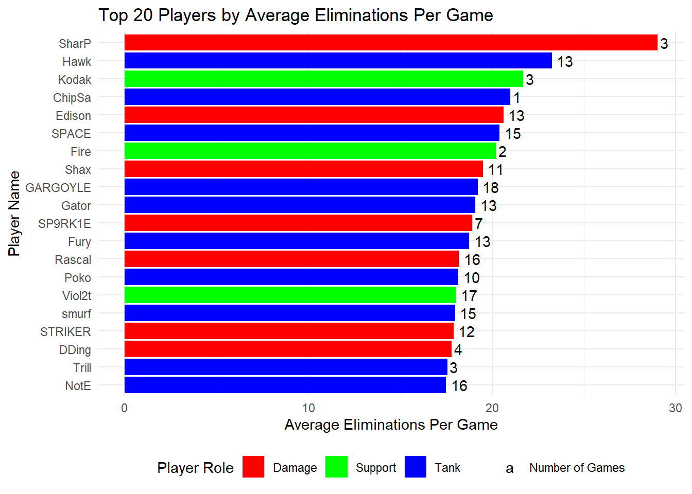
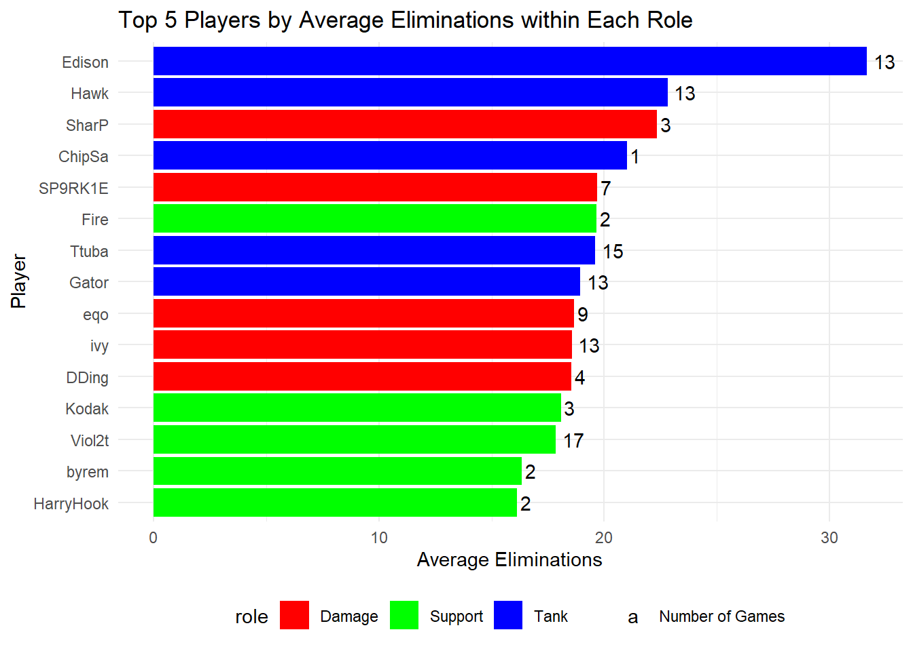
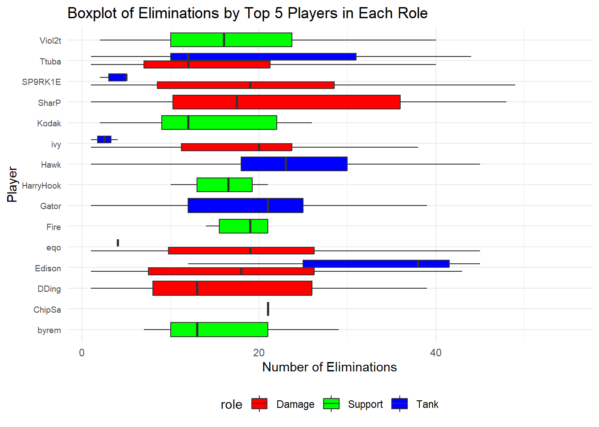
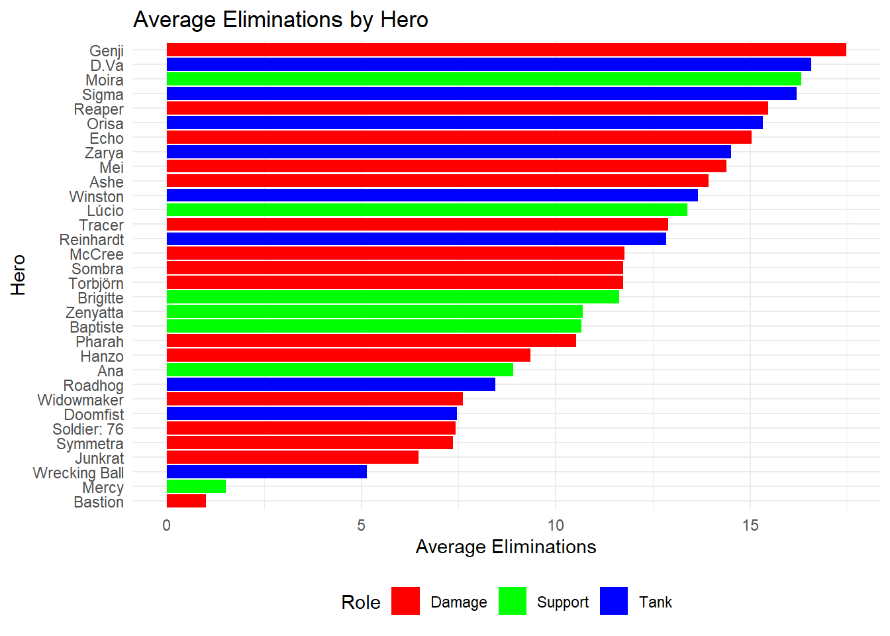
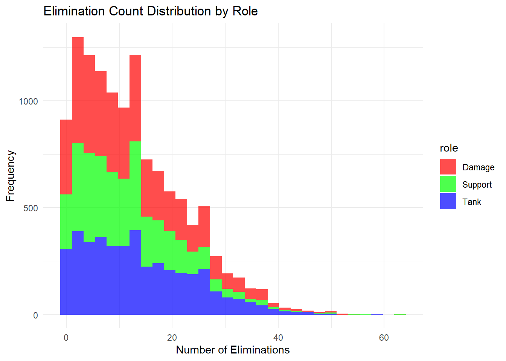
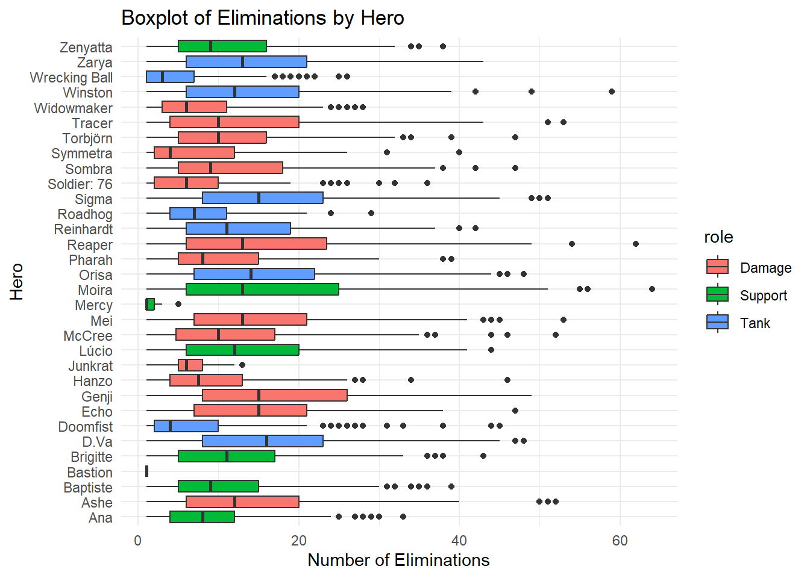
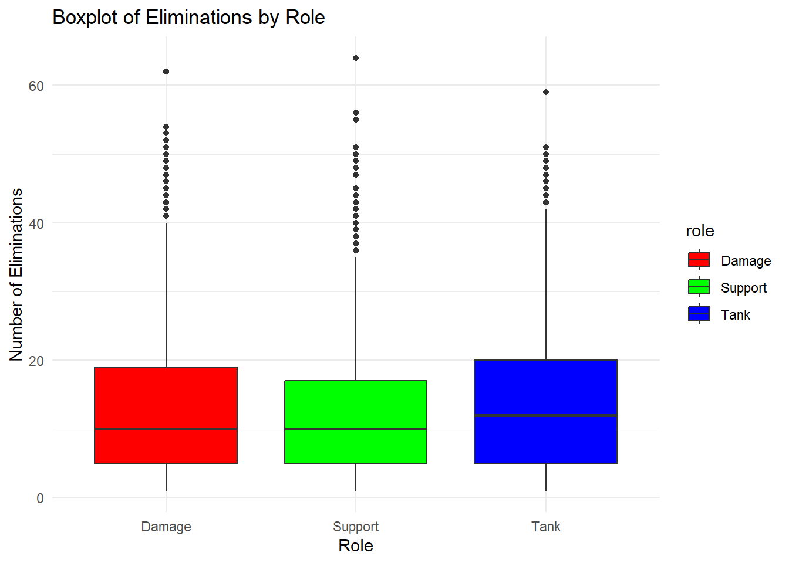
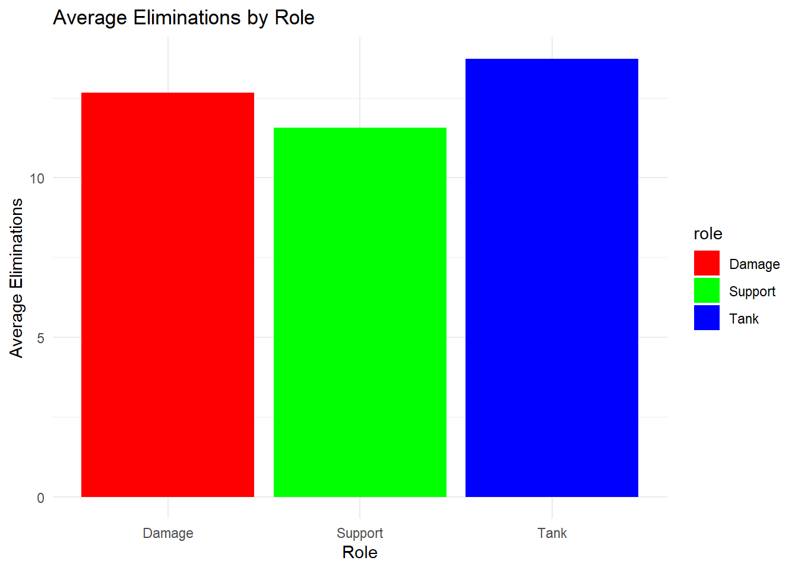
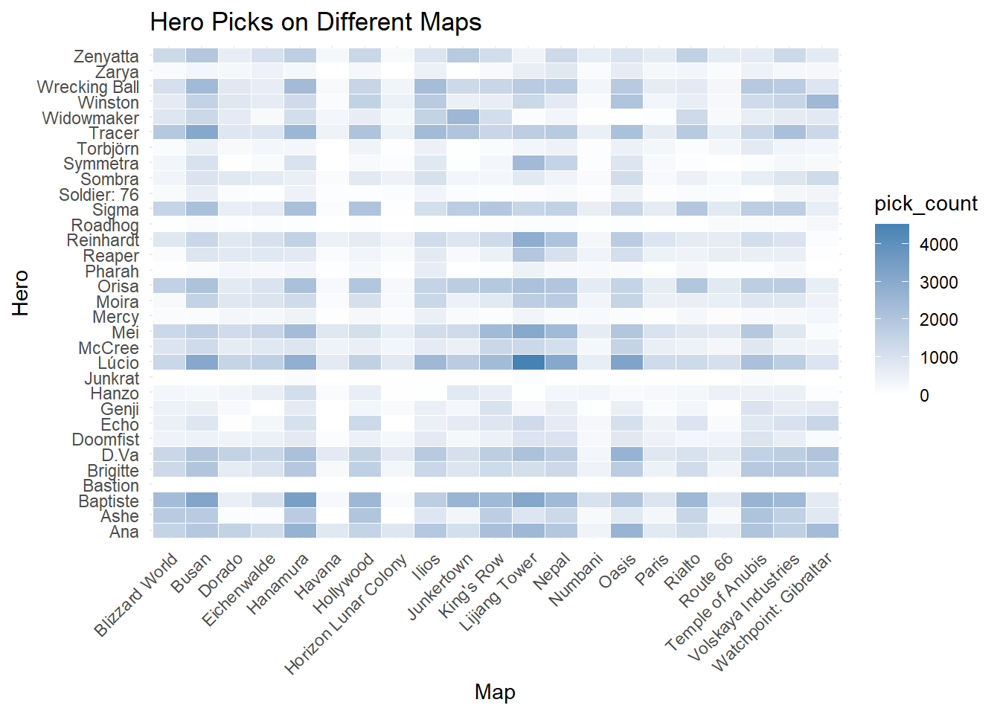

Overwatch, a vibrant, team-based shooter game, features a mix of characters each with unique abilities. In 2020, Overwatch League’s gameplay involved teams of six engaging in dynamic 6v6 combat across various maps and objectives.
The game categorizes characters into three roles:
Tanks: These characters lead the charge, absorbing damage and breaking enemy formations.
Damage Heroes: They specialize in offensive capabilities, requiring skillful play and strategic positioning.
Support Heroes: Vital for team survival, they heal, shield, and enhance their team’s abilities.
Overwatch League: 2020 Season Analysis
The analysis focuses on the 2020 Overwatch League season, played on Overwatch’s original format with six-player teams. This season is notable for its strategic and player dynamics, providing insight into player performances and tactics before Overwatch transitioned to a 5v5 format in its sequel, Overwatch 2.
The shift to 5v5 in Overwatch 2, particularly impacting the role and balance of Tank characters, offers an interesting contrast to the 2020 season data.
Player Performance Analysis
Top Players by Eliminations
Objective: Identify key players based on average eliminations per game.
Design: Utilize color and layout to distinguish player roles. Incorporate annotations to highlight standout players and outliers (e.g., ChipSa).
Visual Strategy: Apply proximity and similarity to enhance readability and comparisons.
Code
num_games_per_player <- eliminations_data %>%group_by(player_name) %>%summarise(num_games =n_distinct(esports_match_id), .groups ='drop')player_impact <-merge(player_impact, num_games_per_player, by ="player_name")top_20_players <- player_impact %>%arrange(desc(average_eliminations)) %>%slice_head(n =20)top_20_players$dummy_legend <-'Number of Games'ggplot(top_20_players, aes(x =reorder(player_name, average_eliminations), y = average_eliminations, fill = common_role)) +geom_bar(stat ="identity") +geom_text(aes(label = num_games, color = dummy_legend), hjust =-0.3, vjust =0.5, position =position_dodge(width =0.9)) +scale_fill_manual(values =c('Tank'='blue', 'Damage'='red', 'Support'='green')) +scale_color_manual(values ='black', name ='', labels ='Number of Games') +coord_flip() +theme_minimal() +labs(x ="Player Name", y ="Average Eliminations Per Game", fill ="Player Role", title ="Top 20 Players by Average Eliminations Per Game") +theme(legend.position ="bottom", legend.title.align =0.5)

Top Players in each Role Compared
Objective: Identify top players in each role based on average eliminations.
Design Choice: Implement a bar graph with role-based color coding and position adjustment for easy comparison.
Contextual Information: Annotate exceptional performances and versatile players.
Code
# Calculate the number of games for each playernum_games_per_player <- eliminations_data %>%group_by(player_name) %>%summarise(num_games =n_distinct(esports_match_id), .groups ='drop')# Get the top 5 players within each role separatelytop_players_by_role <- eliminations_data %>%group_by(role, player_name) %>%summarise(average_eliminations =mean(stat_amount, na.rm =TRUE), .groups ='drop') %>%group_by(role) %>%# Ensure the slicing is done within each roleslice_max(order_by = average_eliminations, n =5, with_ties =FALSE) %>%ungroup() %>%arrange(role, desc(average_eliminations))# Merge this information with the number of gamestop_players_by_role <-merge(top_players_by_role, num_games_per_player, by ="player_name")# Create a dummy variable for the legend (for the number of games)top_players_by_role$dummy_legend <-'Number of Games'ggplot(top_players_by_role, aes(x =reorder(player_name, average_eliminations), y = average_eliminations, fill = role)) +geom_bar(stat ="identity", position =position_dodge(width =0.7)) +geom_text(aes(label = num_games, color = dummy_legend), hjust =-0.3, vjust =0.5, position =position_dodge(width =0.9)) +scale_fill_manual(values =c('Tank'='blue', 'Damage'='red', 'Support'='green')) +scale_color_manual(values ='black', name ='', labels ='Number of Games') +coord_flip() +labs(title ="Top 5 Players by Average Eliminations within Each Role", x ="Player", y ="Average Eliminations") +theme_minimal() +theme(legend.position ="bottom", legend.title.align =0.5)

Top Players in each Role Comparing all Roles played
Objective: Explore the range of player performances throughout the season.
Insight: Contrast consistent high performers with those having limited playtime.
Visual Strategy: Use boxplots to display performance variability and annotate key observations.
Code
# Identifying top 5 players in each role based on average eliminationstop_players_by_role <- eliminations_data %>%group_by(player_name, role) %>%summarise(average_eliminations =mean(stat_amount, na.rm =TRUE), .groups ='drop') %>%group_by(role) %>%slice_max(order_by = average_eliminations, n =5, with_ties =FALSE) %>%ungroup() %>%select(player_name)# Subsetting the eliminations_data to include only these top playerstop_eliminations_data <- eliminations_data %>%semi_join(top_players_by_role, by ="player_name")# Creating the boxplot with the subsetted dataggplot(top_eliminations_data, aes(x = player_name, y = stat_amount, fill = role)) +geom_boxplot(outlier.shape =NA) +# Optional: Hide outlierscoord_flip() +labs(title ="Boxplot of Eliminations by Top 5 Players in Each Role", x ="Player", y ="Number of Eliminations") +scale_fill_manual(values =c('Tank'='blue', 'Damage'='red', 'Support'='green')) +theme_minimal() +theme(legend.position ="bottom", axis.text.y =element_text(size =7))

Hero Performace Analysis
Hero Elimination Impact
Objective: Assess the influence of different heroes on average eliminations.
Context: Explain why elimination metrics vary significantly across roles, especially for support heroes.
Visual Strategy: Differentiate hero roles using color coding, and provide annotations for key insights.
Code
avg_elim_by_hero <- eliminations_data %>%group_by(hero_name, role) %>%# Assuming there's a 'role' columnsummarise(average_eliminations =mean(stat_amount, na.rm =TRUE)) %>%ungroup() %>%# Remove groupingarrange(desc(average_eliminations))ggplot(avg_elim_by_hero, aes(x =reorder(hero_name, average_eliminations), y = average_eliminations, fill = role)) +geom_bar(stat ="identity") +scale_fill_manual(values =c('Tank'='blue', 'Damage'='red', 'Support'='green')) +coord_flip() +labs(title ="Average Eliminations by Hero", x ="Hero", y ="Average Eliminations", fill ="Role") +theme_minimal() +theme(legend.position ="bottom")

Elimination Distribution
Objective: Show the distribution of eliminations across roles.
Clarity: Highlight the differences between Tank, Damage, and Support roles in elimination counts.
Visual Appeal: Use histograms with distinct colors for each role, adding labels for clarity.
Code
ggplot(eliminations_data, aes(x = stat_amount, fill = role)) +geom_histogram(bins =30, alpha =0.7) +labs(title ="Elimination Count Distribution by Role", x ="Number of Eliminations", y ="Frequency") +scale_fill_manual(values =c('Tank'='blue', 'Damage'='red', 'Support'='green')) +theme_minimal()

Hero Performance by Elimination Boxplot
Objective: Analyze hero performance variability using eliminations as a metric.
Gestalt Principle: Leverage enclosure and similarity in boxplots to compare hero performance.
Annotation: Highlight heroes with exceptional performance or limited effectiveness.
Code
ggplot(eliminations_data, aes(x = hero_name, y = stat_amount, fill = role)) +geom_boxplot() +coord_flip() +labs(title ="Boxplot of Eliminations by Hero", x ="Hero", y ="Number of Eliminations") +theme_minimal()

Role Performance Boxplot
Objective: Examine the overall performance of each role through the season.
Design: Implement boxplots with role-based color coding for clear role comparison.
Context: Provide insights into the balance between Damage and Tank roles.
Code
ggplot(eliminations_data, aes(x = role, y = stat_amount, fill = role)) +geom_boxplot() +labs(title ="Boxplot of Eliminations by Role", x ="Role", y ="Number of Eliminations") +scale_fill_manual(values =c('Tank'='blue', 'Damage'='red', 'Support'='green')) +theme_minimal()

Average Eliminations by Role
Objective: Compare average eliminations across different roles.
Insight: Emphasize the surprising performance of Tank heroes over Damage heroes, reflecting the season’s META.
Design: Ensure clear role distinction using color and concise legends.
Code
avg_elim_by_role <- eliminations_data %>%group_by(role) %>%summarise(average_eliminations =mean(stat_amount, na.rm =TRUE)) %>%arrange(desc(average_eliminations))ggplot(avg_elim_by_role, aes(x = role, y = average_eliminations, fill = role)) +geom_bar(stat ="identity") +labs(title ="Average Eliminations by Role", x ="Role", y ="Average Eliminations") +scale_fill_manual(values =c('Tank'='blue', 'Damage'='red', 'Support'='green')) +theme_minimal()

General Analysises
Map-Specific Hero Picks
Objective: Identify trends in hero selection across different maps.
Visual Approach: Use a heat map to indicate the frequency of hero picks per map.
Additional Information: Include annotations on unusual map-specific picks or general hero popularity.
Code
hero_picks_count <- data %>%group_by(esports_match_id, map_name, hero_name) %>%summarise(count =n(), .groups ='drop') %>%ungroup()hero_picks_aggregated <- hero_picks_count %>%group_by(map_name, hero_name) %>%summarise(total_count =sum(count), .groups ='drop')hero_picks_wide <- hero_picks_aggregated %>%pivot_wider(names_from = map_name, values_from = total_count, values_fill =list(total_count =0))hero_picks_long <- hero_picks_wide %>%gather(key ="map_name", value ="pick_count", -hero_name)ggplot(hero_picks_long, aes(x = map_name, y = hero_name, fill = pick_count)) +geom_tile(color ="white") +scale_fill_gradient(low ="white", high ="steelblue") +labs(title ="Hero Picks on Different Maps", x ="Map", y ="Hero") +theme_minimal() +theme(axis.text.x =element_text(angle =45, hjust =1))

Seasonal Elimination Trends
Objective: Track the progression of eliminations throughout the season.
Design: Employ a line graph to depict the temporal trend of eliminations.
Context: Highlight matches with unusually high eliminations as potential points of interest for fans and scouts.
Code
# Convert 'start_time' to a Date object if it's not alreadyeliminations_data <- eliminations_data %>%mutate(date =as.Date(start_time)) %>%arrange(date) %>%group_by(date) %>%summarise(daily_eliminations =sum(stat_amount), .groups ='drop') %>%mutate(cumulative_eliminations =cumsum(daily_eliminations))# Create the plotggplot(eliminations_data, aes(x = date, y = cumulative_eliminations)) +geom_line() +# Use geom_line for a line plotlabs(title ="Rolling Total Number of Eliminations Over Time",x ="Date by Month",y ="Cumulative Eliminations") +theme_minimal()